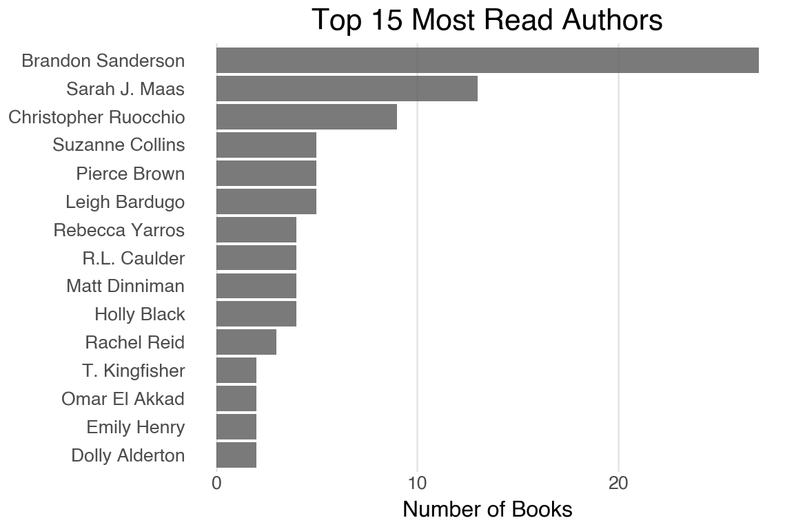
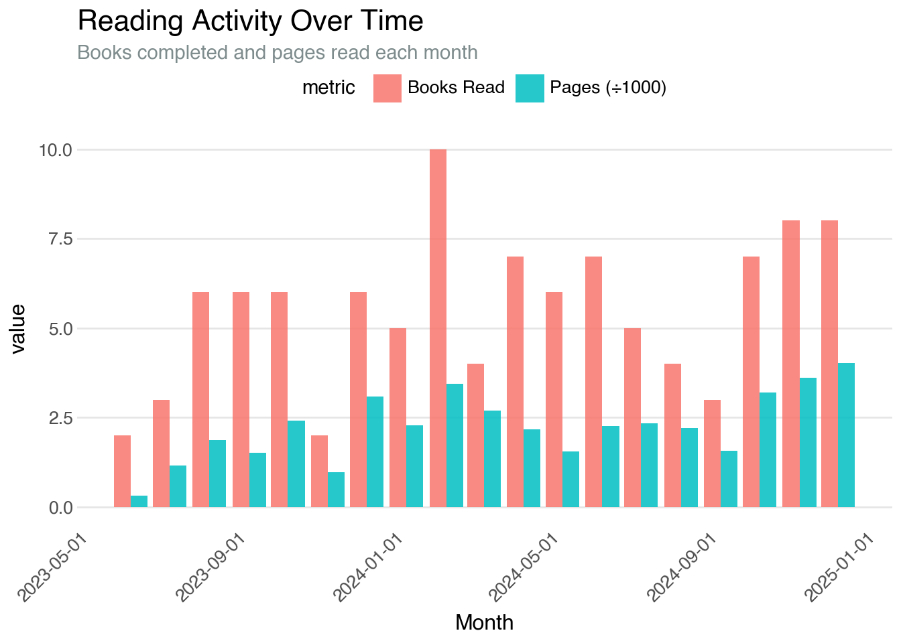

What I’m reading
The data in this report automatically gets automatically updated monthly, so this page should be relatively up-to-date on all the books I’ve reviewed on either Goodreads or Fable. This is not comprehensive of all the books I’ve read, but only what I’ve reviewed since I started tracking my reading in fall 2023. I’m always happy to give a recommendation, especially if you’re also a sci-fi or fantasy lover!
This page itself is a scratchpad/living document that I continue to update as I am curious about my own reading habits. I expect it to become prettier over time, but I thought it would be fun to share, even in a slightly WIP state!
My reviews vs. community
I’m always curious if my opinions line up with the community as a whole.

Five star books
| A few of my favorites | |||||
|---|---|---|---|---|---|
| Cover | Title | Author | My rating | Community avg | Primary genre |
 |
Funny Story | Emily Henry | 5.00 | 4.28 | Romance |
 |
The Hunger Games | Suzanne Collins | 5.00 | 4.45 | Sci-Fi |
 |
No Visible Bruises: What We Don’t Know About Domestic Violence Can Kill Us | Rachel Louise Snyder | 5.00 | 4.56 | None |
 |
The Invisible Life of Addie LaRue | Victoria Schwab | 5.00 | 4.21 | Fantasy |
 |
On Tyranny | Timothy Snyder | 5.00 | 4.37 | History |
 |
Catching Fire | Suzanne Collins | 5.00 | 4.45 | Sci-Fi |
 |
The Song of Achilles | Madeline Miller | 5.00 | 4.28 | Classics |
 |
Demon in White | Christopher Ruocchio | 5.00 | 4.67 | Sci-Fi |
 |
Educated | Tara Westover | 5.00 | 4.48 | Biography |
 |
The Covenant of Water (Oprah's Book Club) | Abraham Verghese | 5.00 | 4.26 | Literary Fiction |
 |
The Book of Doors | Gareth Brown | 5.00 | 4.05 | Fantasy |
 |
Kingdoms of Death | Christopher Ruocchio | 5.00 | 4.57 | Sci-Fi |
 |
Sunrise on the Reaping | Suzanne Collins | 5.00 | 4.60 | Sci-Fi |
 |
Circe | Madeline Miller | 5.00 | 4.16 | Classics |
 |
Let This Radicalize You | Kelly Hayes | 5.00 | 4.55 | Biography |
 |
Morning Star | Pierce Brown | 5.00 | 4.61 | Sci-Fi |
 |
Ashes of Man | Christopher Ruocchio | 5.00 | 4.54 | Sci-Fi |
 |
A Man Called Ove | Fredrik Backman | 5.00 | 4.39 | Literary Fiction |
 |
A Wizard's Guide To Defensive Baking | T. Kingfisher | 5.00 | 3.96 | Fantasy |
Pages and books per month
Keeping a running tally of how much I’m reading per month! But I’m curious of the difference between number of books versus number of pages I’m reading.
